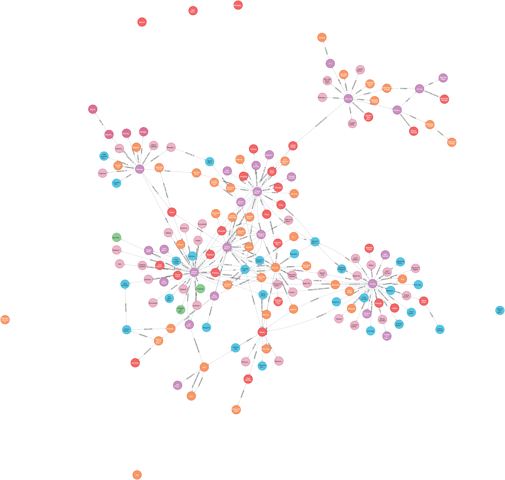
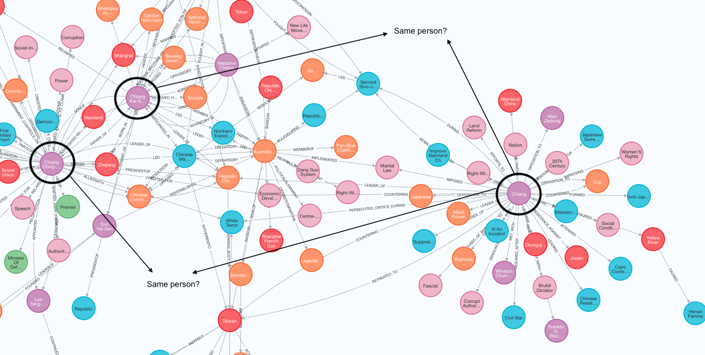

Tools: Python, OpenAI (free tier), LangChain, Neo4j
This article aims to chronicle my process in understanding LLMs and their practical applications as a web developer. I am eager to expand my expertise beyond just the rendering of graphs but to the construction of it from unstructured information. Since newer LLMs, such as OpenAI's GPT series, have made conducting the information extraction pipeline much easier, even bypassing the need to have a deep understanding of Natural Language Processing algorithms and processes (knowledge of basic NLP techniques is still useful), I thought to give it a shot.
LLMs can also be used in tandem with existing Knowledge Graphs, as a natural language interface to a Knowledge Graph, to query and process information for applications such as chatbot. I intend to test this with my newly constructed graph with the end goal being a Q&A chatbot.
I am on the free tier on the OpenAI platform, which is subjected to rate limits on API usage. I am also restricted from using the gpt-4 model, so I will be using gpt-3.5.
I will be creating a knowledge graph based off a single historical figure using OpenAI functions and storing it in a Neo4j database. I reference this article by Tomaz Bratanic, but will be expanding it by adding and explaining alternative steps.
It is simple to extract information from Wikpedia with LangChain. I find that LangChain, a framework for developing applications powered by language models, makes the barriers to entry for beginners even lower.
# Load the OpenAI Wikipedia page
from langchain.document_loaders import WikipediaLoader
from langchain.text_splitter import RecursiveCharacterTextSplitter
raw_documents = WikipediaLoader(query="Chiang Kai-Shek").load()
# Remove unnecessary Wikipedia pages, if need be
import numpy as np
for doc in raw_documents:
print(doc.metadata['source'])
raw_documents = np.array(raw_documents)
raw_documents = raw_documents[[0,1,2]]
Chunking is the process of breaking down large pieces of text into smaller segments. It helps to better contextualize the information fed into the LLM, optimizing the relevance of the response generated by the LLM. In Tomaz's article, he provided good reasoning behind his chosen chunk size.
Each chunk is fed into an LLM prompt to generate a response. We want a structured JSON object of entities and relationships to be returned, representing the knowledge graph.
Further reading: "Chunking Strategies for LLM Applications" by Pinecone
# Define chunking strategy
text_splitter = RecursiveCharacterTextSplitter(chunk_size=2048, chunk_overlap=24)
# Chunk the document
documents = text_splitter.split_documents(raw_documents)
for d in documents:
del d.metadata["summary"]
The desired JSON structure is predefined and provided to the LLM through an OpenAI function call with LangChain, to restrain the LLM response as a standardized representation of entities and relationships we want extracted from the chunk of text and ready to be ingested into a graph database such as Neo4j.
The predefined structure can be in the form of Pydantic classes representing the schema for the entities and relationships, which can be imported with LangChain. Pydantic classes appear to be similar to type annotations with Typescript, serving the purpose of data validation and modeling.
LangChain Use Cases: Extraction
from langchain.graphs.graph_document import (
Node as BaseNode,
Relationship as BaseRelationship,
GraphDocument,
)
from langchain.schema import Document
from typing import List, Dict, Any, Optional
from langchain.pydantic_v1 import Field, BaseModel
class Property(BaseModel):
"""A single property consisting of key and value"""
key: str = Field(..., description="key")
value: str = Field(..., description="value")
class Node(BaseNode):
properties: Optional[List[Property]] = Field(
None, description="List of node properties")
class Relationship(BaseRelationship):
properties: Optional[List[Property]] = Field(
None, description="List of relationship properties"
)
class KnowledgeGraph(BaseModel):
"""Generate a knowledge graph with entities and relationships."""
nodes: List[Node] = Field(
..., description="List of nodes in the knowledge graph")
rels: List[Relationship] = Field(
..., description="List of relationships in the knowledge graph"
)
Perhaps if Pydantic classes seem unfamiliar, providing a JSON Schema, such as below, also works. The JSON object must adhere to the specification. Be aware of the differences in Python data structures (eg. dictionaries) returned from both methods, that may require further processing steps in Python before ingestion into Neo4j.
Further reading: "Using Langchain and OpenAI functions to structure data" by Fabio Costa
json_schema = {
"type": "object",
"properties": {
"nodes": {
"type": "array",
"items": {
"type": "object",
"properties": {
"id": {"type": "string"},
"type": {"type": "string"},
"properties": {"type": "object"}
},
"required": ["id", "type"]
}
},
"rels": {
"type": "array",
"items": {
"type": "object",
"properties": {
"source": {
"type": "object",
"properties": {
"id": {"type": "string"},
"type": {"type": "string"}
},
"required": ["id", "type"]
},
"target": {
"type": "object",
"properties": {
"id": {"type": "string"},
"type": {"type": "string"}
},
"required": ["id", "type"]
},
"type": {"type": "string"}
},
"required": ["source", "target"]
}
}
},
"required": ["nodes", "rels"]
}
We need to give the ChatOpenAI model some instructions. The fine-tuning and iteration of the instructions is called prompt engineering, which is a field with its own nuances that I intend to explore.
The main goal is to generate an output of entities and relationships that matches the predefined JSON structure through two main steps: Named entity recognition and Relationship extraction
To ensure the generated output is as clean as possible with accurate values, detailed instructions must be given. I found the ability to limit node or relationship types to be extracted very handy.
from langchain.chains.openai_functions import (
create_structured_output_chain
)
from langchain.chat_models import ChatOpenAI
from langchain.prompts import ChatPromptTemplate
# Initialize LLM
llm = ChatOpenAI(temperature=0, model_name="gpt-3.5-turbo")
def get_extraction_chain(
allowed_nodes: Optional[List[str]] = None,
allowed_rels: Optional[List[str]] = None
):
prompt = ChatPromptTemplate.from_messages(
[(
"system",
f"""
You are a historian extracting information in structured formats to build a knowledge graph around a key historical figure.
{'- Allowed Node Labels:' + ", ".join(allowed_nodes) if allowed_nodes else ""}
{'- Allowed Relationship Types:' + ", ".join(allowed_rels) if allowed_rels else ""}
- Numerical data, like age or other related information, should be incorporated as attributes or properties of the respective nodes.
- No Separate Nodes for Dates/Numbers: Do not create separate nodes for dates or numerical values. Always attach them as attributes or properties of nodes.
- Property Format: Properties must be in a key-value format.
- Quotation Marks: Never use escaped single or double quotes within property values.
- Naming Convention: Use camelCase for property keys, e.g., "birthDate".
- Relationship Extraction: Some relationship labels have the same meaning, but may be of different verb tense (e.g., "leader of", "led"), always use the most complete label for that relationship throughout the knowledge graph.
- Coreference Resolution: When extracting entities, it's vital to ensure consistency. If an entity, such as "John Doe", is mentioned multiple times in the text but is referred to by different names or pronouns (e.g., "Joe", "he"),
always use the most complete identifier for that entity throughout the knowledge graph. In this example, use "John Doe" as the entity ID.
"""),
("human", "Use the given format to extract information from the following input: {input}"),
("human", "Tip: Make sure to answer in the correct format and JSON compliant"),
])
return create_structured_output_chain(KnowledgeGraph, llm, prompt, verbose=True)
create_structured_output_chain is function in the LangChain library which forces the LLM to generate a structured output. Internally, it creates a function chain (LLMChain) and returns the LLMChain, which consists of a series of components to process user input.
API Documentation: langchain.chains.openai_functions.base.create_structured_output_chain
Further reading: "OpenAI Function Call API in Langchain Library" by Marvin Zhang
Set up a Neo4j database locally and run it.
LangChain provides a Neo4j wrapper for graph operations called Neo4jGraph. Create a new Neo4j graph wrapper instance.
API Documentation: langchain_community.graphs.neo4j_graph.Neo4jGraph
from langchain.graphs import Neo4jGraph
url = "bolt://localhost:7687"
username ="neo4j"
password = "yourpassword"
graph = Neo4jGraph(
url=url,
username=username,
password=password,
database="youdbname"
)
create_structured_output_chain returns an LLMChain. Run the chain on the given text, stored inside the variable document.page_content to generate a response.
LangChain provides a utility function to 'fit' the response as a graph document, parsing and validating data. The graph document is then ingested into the Neo4j graph through the add_graph_documents method, a convenient way of ingestion without the need to write Cypher code.
API Documentation: langchain_community.graphs.graph_document.GraphDocument
def extract_and_store_graph(
document: Document,
nodes:Optional[List[str]] = None,
rels:Optional[List[str]]=None) -> None:
# Extract graph data using OpenAI functions
extract_chain = get_extraction_chain(nodes, rels)
data = extract_chain.run(document.page_content)
# Construct a graph document
graph_document = GraphDocument(
nodes = [map_to_base_node(node) for node in data.nodes],
relationships = [map_to_base_relationship(rel) for rel in data.rels],
source = document
)
# Store information into a graph
graph.add_graph_documents([graph_document])
We need to interate over the chunks, generate a response from each of them, then add the nodes and relationships to the graph.
from tqdm import tqdm
# Specify which node labels should be extracted by the LLM
allowed_nodes = ["Person", "Organization", "Location", "Event", "Service", "Object", "Concept"]
for i, d in tqdm(enumerate(documents), total=len(documents)):
extract_and_store_graph(d, allowed_nodes)
Let's visualize the output in Neo4j and check our results.
The prompt above does not perform coreference resolution at all, as we can see separate nodes for "Chiang", "Chiang Kai-Shek", "Chiang Wei-Kuo" and "Chiang Ching-Kuo". These three people share the same surname. In their Wikipedia pages, 'Chiang' is used to refer to each of them.
A possible solution is to run another LLM prompt on the response to merge nodes that represent the same person. However, in my example, this does not work because of the shared surname and inability to differentiate relationships belonging to the 'Chiang' node.
Fine-tuning the prompt may help, such as warning it about the problem through examples found in the document. I lifted the prompt straight out of Tomaz's code, albeit with some changes of my own, so was surprised to see that the model still did not perform coreference resolution. Perhaps, this is just a limitation of the less powerful gpt-3.5 model. I have yet to check the results generated by gpt-4 with the same prompt.
I like the simple flow, readability and effectiveness of the code above in constructing a graph from text. While researching, I found additional or alternative methods by others worth reviewing, and will attempt to explain them.
The goal here is to utilize an LLMChain to perform summarization of multiple Wikipedia pages first before extracting entities and relationships, which is done in a separate LLMChain. Passing all the text, even in chunks, into the LLM may not be most cost-effective and optimal way of generating the knowledge graph. The benefit of summarization is to provide the LLM more relevant and concise content. However if summarization is not done right, we may risk losing information worth extracting.
After splitting the Wikipedia pages into chunked documents, we first call the LLMChain on each chunk individually to generate an individual summary. This is the 'map' step. Then in the 'reduce' step, we combine those summaries into a single global summary.
This method failed with the OpenAI free tier with this error message: RateLimitError: Error code: 429 - {'error': {'message': 'Rate limit reached for gpt-3.5-turbo in organization XXX on requests per min (RPM): Limit 3, Used 3, Requested 1.
I believe this happened because all of the chunks are sent into the pipeline MapReduceDocumentsChain without being queued. It could also be because there 5 and 3 of these chains finish within a minute.
Why did I not encounter this error in my previous section? create_structured_output_chain function, an LLMChain, is called once per chunk (ie. one API call per chunk). Since each chunk takes a few minutes to have a generated response and the function will only be called again when the previous LLMChain has finished, the 3 RPM limit is not reached.
LangChain Use Cases: Summarization
from langchain.chains import MapReduceDocumentsChain, ReduceDocumentsChain, StuffDocumentsChain
# Initialize LLM
llm = ChatOpenAI(temperature=0, model_name="gpt-3.5-turbo")
# Define the map prompt template
map_prompt = PromptTemplate.from_template(
"The following is a set of documents: {documents}, please perform summaries of them."
)
map_chain = LLMChain(llm=llm, prompt=map_prompt)
# Define how to combine these summaries
reduce_prompt = PromptTemplate.from_template(
"The following is set of summaries: {documents}, take these and distill it into a final, consolidated summary."
)
reduce_chain = LLMChain(llm=llm, prompt=reduce_prompt)
# Takes the summaries, combines them into a single string, and passes this to an LLMChain
combine_documents_chain = StuffDocumentsChain(
llm_chain=reduce_chain,
document_variable_name="documents" # This should match the variable name in reduce_prompt
)
# Combines and iteravely reduces the mapped documents
reduce_documents_chain = ReduceDocumentsChain(
combine_documents_chain=combine_documents_chain, # This is final chain that is called.
token_max=4000 # The maximum number of tokens to group documents into.
)
# Combining documents by mapping a chain over them, then combining results
map_reduce_chain = MapReduceDocumentsChain(
llm_chain=map_chain,
reduce_documents_chain=reduce_documents_chain
)
# Run the MapReduce Chain
summarization_results = map_reduce_chain.run(documents)
The pipeline above is wrapped in LangChain's load_summarize_chain with chain_type="map_reduce".
from langchain.chains.summarize import load_summarize_chain
llm = ChatOpenAI(temperature=0, model_name="gpt-3.5-turbo")
chain = load_summarize_chain(llm, chain_type="map_reduce")
chain.run(documents)
Another important consideration is text preprocessing, such as stop word removal, tokenization and stemming, to put the data in a clean and analyzable form. Tokenization is not the same thing as chunking!
The output of tokenization and chunking can be similar in terms of the units they represent (e.g., words, subwords, sentences), but their purposes and the information they capture are different. The goal of tokenization is to provide a structured representation of the input text that can be used for further analysis or processing.
It is recommended practice to perform tokenization before chunking. In the context of chunking, having a well-defined set of tokens simplifies the task of identifying and extracting meaningful syntactic units like noun phrases, verb phrases, or other grammatical constructs. It allows for a more focused analysis of the relationships between the tokens within the sentence.
Futhermore, there is a limit to the number of tokens that can be fed to an LLM. Tokenizing and counting tokens enable us to have a close control of how many tokens we are spending to avoid errors and unsuspected expenditures.
Initialize the tiktoken tokenizer with the encoder as "cl100k_base". This is a specific tiktoken encoder which is used by gpt-3.5-turbo and gpt-4. Tiktoken was created for use with OpenAI's models, so while there are many other possible tokenizers, only use tiktoken if the LLM is from OpenAI.
I heavily reference directly from a section found in the "Data Preprocessing with LangChain" jupyter notebook from Pinecone's LangChain Handbook.
"gpt-3.5-turbo supports a context window of 4096 tokens — that means that input tokens + generated ( / completion) output tokens, cannot total more than 4096 without hitting an error.
So we 100% need to keep below this. If we assume a very safe margin of ~2000 tokens for the input prompt into gpt-3.5-turbo, leaving ~2000 tokens for conversation history and completion.
With this ~2000 token limit we may want to include five snippets of relevant information, meaning each snippet can be no more than 400 token long.
To create these snippets we use the RecursiveCharacterTextSplitter from LangChain. To measure the length of snippets we also need a length function. This is a function that consumes text, counts the number of tokens within the text (after tokenization using the gpt-3.5-turbo tokenizer), and returns that number."
import tiktoken # !pip install tiktoken
tokenizer = tiktoken.get_encoding('p50k_base')
# create the length function
def tiktoken_len(text):
tokens = tokenizer.encode(
text,
disallowed_special=()
)
return len(tokens)
text_splitter = RecursiveCharacterTextSplitter(
chunk_size=2048,
chunk_overlap=24,
length_function=tiktoken_len
)
Besides OpenAI's GPT series of models, there are other open source LLMs, such as Mistral7b, which was created by Mistral AI, a research organization and hosting platform for LLM.
Mistral AI's family of 7B models can be used with LangChain. They can also be accessed and run locally with Ollama, a tool that allows you to run open-source LLMs locally on your machine. The benefit of doing so is doing away with the need to spend on API credits. The Open AI models cannot be accessed with Ollama.
Unlike OpenAI's modesl, Mistral7b does not offer function calls to create structured responses. You may use output parsers to structure LLM responses instead. You may also write your own Python function to transform the response to Cypher so that it can be ingested into Neo4j.
LangChain Use Cases: Extraction (mentions output parsers)
from langchain.chat_models import ChatMistralAI
# Initialize LLM
llm = ChatMistralAI(temperature=0, model_name="mistral-tiny")
import ollama.client as client
response, _ = client.generate(model_name="mistral-openorca:latest, system=SYS_PROMPT, prompt=prompt)
result = json.loads(response)
Despite having all the documents at hand, the recipe shared in my earlier section may not be the best way to construct a full and accurate knowledge graph.
An alternative way is construct a base graph from a subset of documents first to extract key entities. Next, input these entitities along with other documents into a subsequent LLM prompt to generate further entites and relationship
Recent Neo4j blogposts are a useful resource for gaining answers and inspiration for integrating knowledge graphs with LangChain and LLM applications.